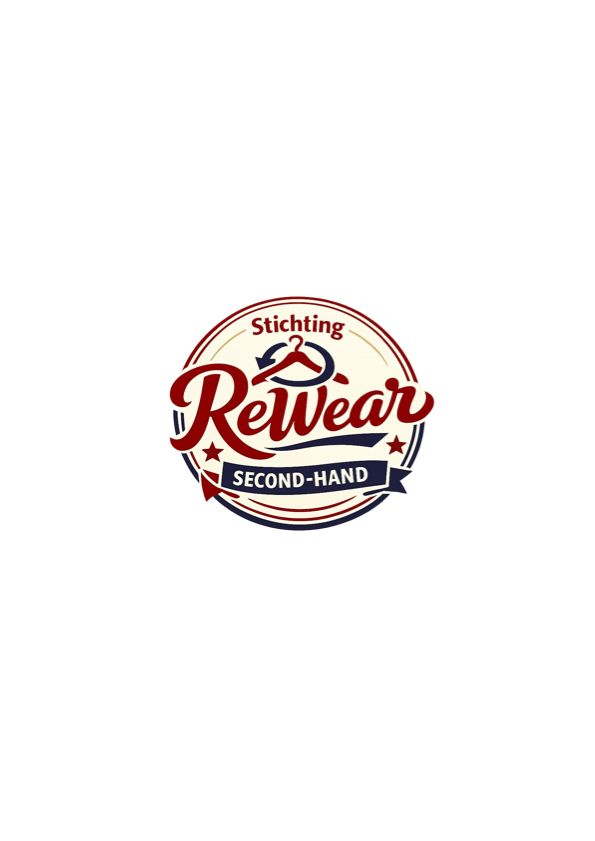

Draag bij. Draag door. Draag ReWear.
Wij geloven dat iedereen recht heeft op kleding waarin zij zich goed voelen. Door kleding een tweede leven te geven maken we mode duurzamer, betaalbaarder en toegankelijk voor iedereen...
Stichting ReWear zet zich in voor duurzaamheid, maatschappelijke ondersteuning en toegankelijkheid van kleding voor iedereen...
Wij ontvangen kledingdonaties van particulieren en organisaties.
Alle kleding wordt gecontroleerd en gesorteerd.
Via samenwerkingen met maatschappelijke partners helpen wij mensen die kleding nodig hebben.
Door kleding een tweede leven te geven verminderen we afval en verspilling.
Adres: Laden...
E-mail: Laden...
KvK: 42309145
IBAN: Laden...
Laden...
Wilt u Stichting ReWear ondersteunen met een financiële bijdrage, kledingdonatie of samenwerking?